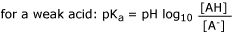

Ionisation
An important complicating factor here is pH. Most drugs are either weak acids or weak bases and the degree of ionisation will depend on pH. The ionised form of the drug is usually insoluble in lipid so it will not cross membranes. The lipid solubility of the unionised form is a property of the drug but is usually much greater than that of the ionised form. The dissociation constant, pKa is an important concept. It is given by the Henderson - Hasselbalch equation:


ie, the pKa is the pH at which the drug is 50% ionised.
A weak acid usually has a low pKa eg aspirin - 3.5, a weak base
usually has a high pKa eg pethidine 8.6. This has practical applications
if the
pH on
each side of a membrane is different.
| 3 Pharmacokinetics index |
| |
copyright
Massey University
|